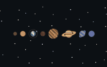

Studying HBO-ICT is a risk for me, because it takes me outside my usual comfort zone. Before starting this programme, I had only worked with code a handful of times. Each of those times was something I chose to do out of my own interest, and I enjoyed it. That enjoyment was a major reason for pursuing a bachelor in ICT. As long as I keep showing up and completing my tasks, I believe I will come to understand the material and continue to find it interesting.

WHY: I believe playing it safe means missing the chance to create something spectacular, and I have a constant need for knowledge.
HOW: I keep showing up, and my art background gave me patience and a creative eye.
WHAT: I study HBO-ICT at HZ, and later I want to work as ... (fill in).